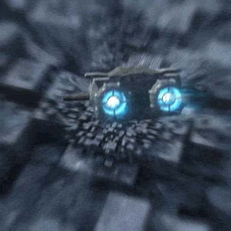

Antes de comenzar con el desarrollo del juego decidimos ponernos de acuerdo con la temática. Una vez consensuado sin ningún problema, decidimos empezar con la realización de un juego más simple que sentase las bases, y así comenzar con la idea que teníamos en mente. Para ello, probamos con el clásico juego que comprende una raqueta y una bola - la bola ha de destruir diversos ladrillos - para de esta manera poder entender el funcionamiento de los rebotes en las paredes. Una vez teníamos la perfecta ejecución del juego inicial procedimos a la adaptación del que habíamos pensado y planeado. De esta forma, nos encontramos con el primer problema: la sustitución de ladrillos por naves móviles. Al querer sustituir la figura geométrica por una imagen específica, pasamos a través de diversas trabas que conseguimos solventar con la creación de una función que dibuja los recursos que necesitamos.  Una vez conseguida pasar esa pequeña dificultad, nos encontramos con otra, y es que los disparos no eran otras imágenes, sino una linea que se extendía desde que pulsas espacio hasta que sueltas. Para esto decidimos introducir una variable booleana que respondiese a un evento de pulsación de tecla, consiguiendo así que el tamaño de la bala fuese siempre el mismo, independientemente del tiempo de pulsación. Cuando ya habíamos conseguido que el juego a nivel 0 funcionase,decidimos implementar niveles. Para ello necesitabamos reiniciar todas las variables, para que al cambiar de nivel tuviesen su valor correspondoente al nivel, y reiniciase las condiciones de final de juego. Aquí nos surgió un nuevo problema y es que no conseguíamos reinicar el juego ya que su estructura hacía que fuese más complejo el reseteo de las variables. Conseguimos modificarlo, limpiar la pantalla y darle el valor deseado a las variables cada vez que se pasaba de nivel. Otra idea inicial era hacer un ranking que te indicase la posición en la que estabas dependiendo del score obtenido. Finalmente, Gabriel, el encargado de su realizaión, por motivos personales, no pudo hacerlo y tuvimos que cambiarlo por un marcador que indica tu última puntuación. Respecto a los tiempos de planificación, estos fueron cumplidos al principio sin ningún problema, ya que además lo primero evidentemente era crear la estructura básica del juego, y eso no nos causó problemas. Después cuando ya empezamos con funciones más complejas, debido a todo lo sucedido con el Covid-19, el cambio del plazo de entrega y el tema del compañero que apenas ha hecho nada por motivos personales, los plazos establecidos incialmente para el juego se vieron trastocados. Finalmente, los plazos acordados tras conocer estos cambios se han cumplido, ya que reservamos días para pedir tutorías para los problemas que suponiamos que podían surgir. Las funciones de cada participante del grupo han sido las siguientes: - Alberto López, Raúl Linio e Inés García nos hemos encargado de la implementación de las funciones del juego en general. Más concretamente: - Alberto se ha encargado de la optimización y diseño de las funciones, dibujado de imagenes en canvas, estética del juego, loop principal, reinicio y procesamiento multimedia, de los HTML de intrucciones y desarrollo. - Inés se ha encargado de implementar los niveles, y otras funciones como las colisiones, final de juego y enviar correo electrónico, y de los HTML de autores, intrucciones y contacto. - Raúl se ha encargado de los marcadores, de funciones como las responsables de los rebotes y el final del juego, de los eventos de teclado, y de los HTML de intrucciones y desarrollo. - Gabriel, por lo comentado anteriormente, solo ha hecho el navegador. Por hacer una aproximación del trabajo individual hecho en el proyecto, definimos los siguientes porcentajes: - Alberto 38% - Inés 28% - Raúl 28% - Gabriel 6%.